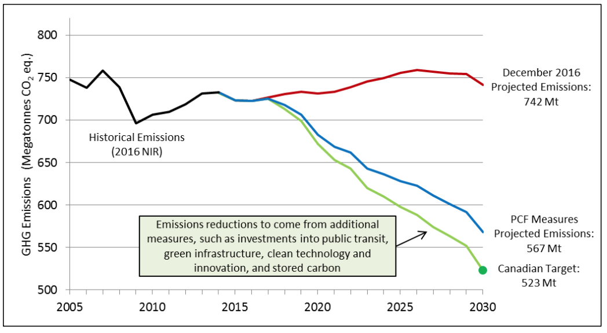

Following the release of the Pan-Canadian Framework on Clean Growth and Climate Change, Canada’s plan to address climate change and grow the economy, the Government of Canada is pleased to update its Nationally Determined Contribution submission under the Paris Agreement. Canada recognizes the need to reduce greenhouse gas emissions and considers addressing climate change as an opportunity to transition to a strong, diverse and competitive low-carbon economy.
Canada’s action to address climate change at home will be guided by the collective long-term goal agreed in Paris to hold the increase in the global average temperature to well below 2 degrees Celsius above pre-industrial levels, and to pursue efforts to limit that increase to below1.5 degrees. Canada recognizes that meeting the temperature commitment in the Paris Agreement will take global action to reduce greenhouse gases, including carbon dioxide, and short-lived climate pollutants such as hydrofluorocarbons and methane covered under the United Nations Framework Convention on Climate Change (UNFCCC).
To contribute to the achievement of the Paris Agreement, Canada is committed to reduce greenhouse gas emissions by 30 percent below 2005 levels by 2030. In addition to addressing gases covered under the UNFCCC, Canada is taking action to reduce black carbon – a short-lived climate pollutant of particular significance in the Arctic due to its contribution to Arctic warming. In Canada, the Arctic has already warmed by 2.2 degrees between 1948 and 2013.
The Pan-Canadian Framework on Clean Growth and Climate Change
As a first step towards implementing the commitments Canada made under the Paris Agreement, First Ministers released the Vancouver Declaration on Clean Growth and Climate Change on March 3, 2016. Through the Vancouver Declaration, working groups were established to develop options for pricing carbon pollution; complementary actions to reduce emissions; adaptation and climate resilience; and clean technology, innovation and jobs. This process was supported and informed by an extensive process to engage Indigenous Peoples, experts, stakeholders and the public.
As a result of these efforts, the Pan-Canadian Framework on Clean Growth and Climate Change was adopted on December 9, 2016. It is a comprehensive plan to reduce emissions across all sectors of the economy, accelerate clean economic growth, and build resilience to the impacts of climate change. The actions outlined in the Pan-Canadian Framework, supported by federal investments announced in Budget 2017, will enable Canada to meet or even exceed its target to reduce emissions to 30% below 2005 levels by 2030.
The PCF builds on the early leadership of provinces and territories and the diverse array of policies and measures already in place across Canada to reduce greenhouse gas emissions in all sectors of the economy, as highlighted by Canada’s Biennial Reports. Many of the policies and measures in the Framework are intended to be scalable to enable increasing ambition over time, and will be subject to rigorous and ongoing evaluation in order to ensure that Canada is well-positioned to meet its current and future climate change commitments.
Pricing Carbon Pollution
Pricing carbon pollution is central to Canada’s plan. The Government of Canada has outlined a benchmark for pricing carbon pollution that will build on existing provincial systems and ensure a minimum price of $10 per tonne is in place across Canada by 2018, rising to $50 per tonne by 2022. Provinces and territories will continue to have the flexibility to implement either an explicit price on carbon (e.g., through a carbon tax) or cap-and-trade systems and will retain all revenue generated by carbon pricing. Carbon pricing will help influence investment and purchase decisions towards lower carbon-intensive options.
Complementary Mitigation Actions
In addition to carbon pricing, the complementary mitigation measures included in the Framework will enable Canada to achieve emissions reductions across all sectors, both in the near-term and as part of a longer-term strategy. Expanding the use of clean electricity and low carbon fuels are foundational actions that will reduce emissions across the economy.
To increase the use of low-carbon fuels, the federal government, working with provincial and territorial governments, industry and other stakeholders, will develop a clean fuel standard to reduce emissions from fuels used in transportation, buildings, and industry.
Using a mix of regulations and investments, Canada will also continue to drive down emissions from electricity. This will include new regulations to accelerate the phase-out of traditional coal units by 2030 and performance standards for natural gas-fired electricity. These actions will be complemented by investments to modernize Canada’s electricity systems, including in smart grid and energy storage technologies, and new and enhanced transmission lines to connect new sources of clean power with places that need it.
In addition to transitioning to lower-carbon fuels and clean electricity in the built environment, transportation, and industrial sectors, Canada will take action to reduce energy use by improving energy efficiency, fuel switching and supporting innovative alternatives. In the built environment sector, this will include developing “net-zero energy ready” building codes to be adopted by 2030 for new buildings; retrofitting existing buildings based on new retrofit codes and providing businesses and consumers with information on energy performance; and improving energy efficiency of appliances and equipment.
Actions in the transportation sector include continuing to set increasingly stringent standards for light- and heavy-duty vehicles, as well as taking action to improve efficiency and support fuel switching in the rail, aviation, marine, and off-road sectors; developing a zero-emissions vehicle strategy by 2018 and investing in infrastructure to support zero-emissions vehicles; and investing in public transit and other infrastructure to support shifts from higher- to lower-emitting modes of transportation.
To reduce emissions from industrial sectors, Canada is developing regulations to achieve a reduction of methane emissions from the oil and gas sector, including offshore activities, by 40-45 percent by 2025. Federal, provincial, and territorial governments will work together to help industries improve their energy efficiency and invest in new technologies to reduce emissions,including in the oil and gas sector. Canada has also committed to finalizing regulations to phase down the use of hydrofluorocarbons in line with the Kigali Amendment to the Montreal Protocol.
Other actions in the Pan-Canadian Framework include: protecting and enhancing carbon sinks including in forests, wetlands and agricultural lands; identifying opportunities to generate renewable fuel from waste; and demonstrating leadership by reducing emissions from government operations and scaling up the procurement of clean energy and technologies. The Framework also includes support for clean technology and innovation that promote clean growth, including for early-stage technology development, establishing international partnerships, and encouraging “mission-oriented” research to help generate innovative new ideas and create economic opportunities. Other complementary actions include: support for research, development, demonstration and adoption of clean technology in Canada’s natural resource sectors; an Impact Canada Fund to support clean technology and a Smart Cities Challenge.
The Pan-Canadian Framework also recognizes the importance of building climate-resilience and sets out measures to help Canadians understand, plan for, and take action to adapt to the unavoidable impacts of climate change. For example, the federal government will establish a new Canadian Centre for Climate Services and work with provinces and territories and other partners to build regional adaptation capacity and expertise that will make it easier for governments, communities, and businesses to access and use climate data and information to make adaptation decisions. Measures to build resilience through infrastructure include climate resilient codes and standards and a fund for built and natural, large-scale infrastructure projectsthat support mitigation of natural disasters, extreme weather events and climate resilience. A national action plan will be developed to respond to the range of health risks caused by climate change, including extreme heat and infectious diseases such as Lyme disease.
With the understanding that Indigenous Peoples and coastal and northern regions are particularly vulnerable to climate impacts, action is also being taken to help these communities thrive. This includes support for Indigenous Peoples to monitor changes in their communities and take action to address climate impacts, including repeated and severe flooding. In addition, targeted funding will be provided to enhance resilience in northern communities by increasing capacity to adapt and improve the design and construction of northern infrastructure.
To support these measures, the Government of Canada has announced a number of significant investments. These include:
Pathway to Canada’s 2030 target
To achieve its target, Canada must reduce its total economy-wide emissions to 523 Mt in 2030. The Government of Canada uses a recognized energy and macroeconomic modeling framework [1] to produce emissions projections to 2030, which are published on an annual basis. The most recent emissions projections, published in December 2016 (https://www.ec.gc.ca/gesghg/default.asp?lang=En&n=1F24D9EE-1), indicate that with federal, provincial and territorial policies and measures that have legislated or funding certainty and were in place as of November 1 st, 2016, (just prior to the Pan Canadian Framework) total Canadian GHG emissions would be 742 megatonnes of carbon dioxide equivalent (Mt CO2eq) in 2030.
Figure 1: Pathway to Canada’s 2030 target

The federal, provincial and territorial policies within the pan-Canadian Framework that have been modelled are projected to decrease Canada’s emissions by 175 Mt. This includes the estimated impacts of carbon pricing, proposed regulations (e.g., clean fuel standard, accelerated coal phase-out, vehicle efficiency standards, regulations for methane and HFCs), and some additional actions in electricity, buildings, transportation and industry.
This estimate of 175 Mt does not include the full suite of commitments under the Pan-Canadian Framework. Specifically, the emission reductions associated with the unprecedented levels of investment in public transit, green infrastructure, innovation and clean technologies have not yet been estimated or modelled. Emissions reductions from these investments will be assessed and quantified as specific projects are identified and programs are implemented.
Additionally the potential increases in stored carbon (carbon sequestration) in forests, soils and wetlands have not been included in the projected emissions reductions figure of 175 Mt. For a country such as Canada, carbon sequestration could make an important contribution to the achievement of the 2030 target.
Finally, the projected emissions reductions in the figure above do not assume that additional mitigation policies or measures would be implemented by the provinces and territories between now and 2030. Emissions reductions from additional future actions taken by other jurisdictions will be assessed if and when new measures are implemented.
Figure 2: Emissions Reductions from the Pan-Canadian Framework[2]
Transparency and Ongoing Evaluation
The measures and investments outlined in the Pan-Canadian Framework will enable Canada to meet or even exceed its 2030 target and provide a strong foundation to achieve deeper emissions reductions over time and build a highly competitive, low-carbon economy. Many of the policies and measures in the Framework are intended to be scalable to enable increasing ambition over time, and will be subject to rigorous and ongoing evaluation in order to ensure that Canada is well-positioned to meet its current and future climate change commitments. Canada’s MidCentury Long-Term Low-Greenhouse Gas Development Strategy, which was released in November 2016, describes various pathways for innovative and creative solutions to low-carbon development. This long-term perspective will help to guide the elaboration of policies and investments under the Pan-Canadian Framework, as Canada continues to take action to significantly reduce emissions by 2030 and on an ongoing basis.
The Pan-Canadian Framework commits to ongoing monitoring and reporting on results, in order to ensure that policies are effective, take stock of progress achieved, and to inform Canada’s future national commitments in accordance with the Paris Agreement. This will include annual reporting to the Prime Minister of Canada and provincial and territorial Premiers; external assessment and advice by experts; meaningful engagement with Indigenous Peoples, including through distinction-based tables; and reviews of carbon pricing approaches in 2020 and 2022, including expert assessment of stringency and effectiveness that compares carbon pricing systems across Canada. In addition, the Government of Canada will continue to regularly evaluate regulatory approaches, track and report on progress. These and other mechanisms for transparency and accountability will enable Canada to track progress towards its target and adjust policies and approaches over time as needed.
| Nationally Determined Contribution |
|---|
| Canada intends to achieve an economy-wide target to reduce its greenhouse gas emissions by 30% below 2005 levels by 2030. |
| Clarifying Information | |
|---|---|
| Base year | 2005 |
| Base year emissions (Mt CO2 eq.)* | 747 |
| End year | 2030 |
| Target reduction (%) | 30 |
| Target (Mt CO2 eq.)* | 523 |
| Type | Absolute reduction from base-year emissions |
| Coverage | Economy wide – 100% of Canadian greenhouse gas inventory |
| Gases covered | carbon dioxide (CO2) methane (CH4) nitrous oxide (N2O)sulphur hexafluoride (SF6) perfluorocarbons (PFCs) hydrofluorocarbons (HFCs) nitrogen trifluoride (NF3) |
| Sectors | All Intergovernmental Panel on Climate Change (IPCC) sectors |
| Implementation | Domestically, the Government of Canada is taking steps to reduce greenhouse gas emissions. The Government of Canada is committed to taking strong action, with significant investments in a low-carbon economy, green infrastructure, and clean technology. The Government of Canada recognizes that collaboration on climate change action is important, which is why its approach builds on the efforts of provinces and territories, local governments, Indigenous organizations, businesses, youth, the academic community, and non-governmental organizations. To help achieve the goals and actions outlined in the Pan-Canadian Framework on Clean Growth and Climate Change, the programs and policies put in place will be monitored, results will be measured, and performance will be reported on domestically in a way that is transparent and open to external, independent review. The effectiveness of actions will also be assessed to ensure continual improvement and increase ambition over time, in accordance with Paris Agreement. |
| Key Assumptions | |
|---|---|
| Metric applied | 100-year Global Warming Potential values from the IPCC Fourth Assessment Report |
| Methodologies for estimating emissions | IPCC 2006 Guidelines and IPCC 2013 Supplementary Methods on Wetlands |
| Approach to accounting for agriculture, forestry, and other land uses | Canada is examining its approach to accounting in the land use, land-use change and forestry sector. Canada will use “the IPCC production approach” to account for harvested wood products and will exclude the impacts of natural disturbances and focus on anthropogenic emissions and removals. |
| Contribution of international mechanisms | Canada will explore the use of international mechanisms in the overall effort to achieve its 2030 target, subject to the establishment of robust systems that deliver real and verified emissions reductions. Canada will work with Parties under the UNFCCC to ensure effective systems are established. |
[*Based on Canada’s 2016 National Inventory Report on greenhouse gas sources and sinks from 1990 to 2014]
For more information on ECCC modeling of GHG projections, please see link.
(https://www.canada.ca/en/services/environment/weather/climatechange/climate-action/modelling-ghgprojections.html.) ↩
Estimates assume purchase of carbon allowances (credits) from California by regualated entities under the Quebec and Ontario’s cap-and-trade system that are or will be linked through the Western Climate Initiative. ↩